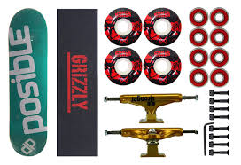

A História e as Modalidades
O skate nasceu na Califórnia na década de 1960, criado por surfistas que queriam "surfar no asfalto" em dias de maré baixa. Hoje, é um esporte olímpico e uma filosofia de vida global.
Principais Modalidades do Skate
- Street: Manobras em obstáculos da rua como corrimãos e escadas.
- Park: Disputado em pistas que misturam transições e bacias.
- Vert (Vertical): Praticado em rampas de formato U (Halfpipe).
As Peças de um Skate Completo
- Shape (a tábua de madeira + Lixa)
- Trucks (os eixos de metal + Parafusos)
- Rodinhas (de poliuretano)
- Rolamentos (geralmente classificação ABEC)

Quer saber mais? Visite a página sobre Skate na Wikipédia.